上节回顾：一文读懂ES6（附PY3对比） | 一文入门NodeJS
演示demo：https://github.com/lotapp/BaseCode/tree/master/javascript/0.H5_C3/H5
参考文档：https://www.w3cschool.cn/html5 | https://developer.mozilla.org/zh-CN/docs/Web/Guide/HTML/HTML5
HTML5主要目的是为了在移动设备上支持多媒体，eg：<video>、<audio>、<canvas>（PS：Flash太重量级）
这么多年下来了，有些API被广泛支持，有些API逐渐淡化在视线中了（eg：WebSQL、IndexedDB等）
我们来看下常用的新特性：
<font>、<center>
number、url、email...<nav>、<header>、<footer>...<canvas>、<video>、<audio>localStorage优点：跨平台
PC端支持不是特别友好
- PS：主要是低版本浏览器不太支持新特性
有利于SEO，有利于盲人阅读等，官方文档：http://www.w3school.com.cn/html/html5_semantic_elements.asp
https://developer.mozilla.org/zh-CN/docs/Web/Guide/HTML/Sections_and_Outlines_of_an_HTML5_document
常用语义化标签：
<nav>导航区域</nav>
<header>头部区域</header>
<main>主内容区</main>
<footer>尾部区域</footer>
<article>文章区域</article>
<aside>侧栏区域</aside>
<section>内容组/节</section>PS：可以将网站首页划分为简介、内容、联系信息等内容组（section）
官方给的语义化标签：
标签 描述
<article> 定义文章。
<aside> 定义页面内容以外的内容。
<details> 定义用户能够查看或隐藏的额外细节。
<figcaption> 定义 <figure> 元素的标题。
<figure> 规定自包含内容，比如图示、图表、照片、代码清单等。
<footer> 定义文档或节的页脚。
<header> 规定文档或节的页眉。
<main> 规定文档的主内容。
<mark> 定义重要的或强调的文本。
<nav> 定义导航链接。
<section> 定义文档中的节。
<summary> 定义 <details> 元素的可见标题。
<time> 定义日期/时间。PS：<div>没有语义的标签</div>，使用方面和语义标签一样，但SEO效果没语义标签好
可以看看我几年前写的文章：http://www.cnblogs.com/dunitian/p/5123741.html
先看看最关心的兼容性问题：
低版本会把语义标签当成用户自定义的标签，eg：
<!DOCTYPE html>
<html>
<head>
<meta charset="utf-8">
<meta http-equiv="X-UA-Compatible" content="IE=edge">
<title>Page Title</title>
<meta name="viewport" content="width=device-width, initial-scale=1">
<style>
nav {
height: 200px;
background-color: red;
}
div {
height: 200px;
background-color: blue;
}
</style>
</head>
<body>
<!-- 导航 -->
<nav>语义标签的导航</nav>
<div>没有语义的导航</div>
</body>
</html>浏览器基本上都是支持的
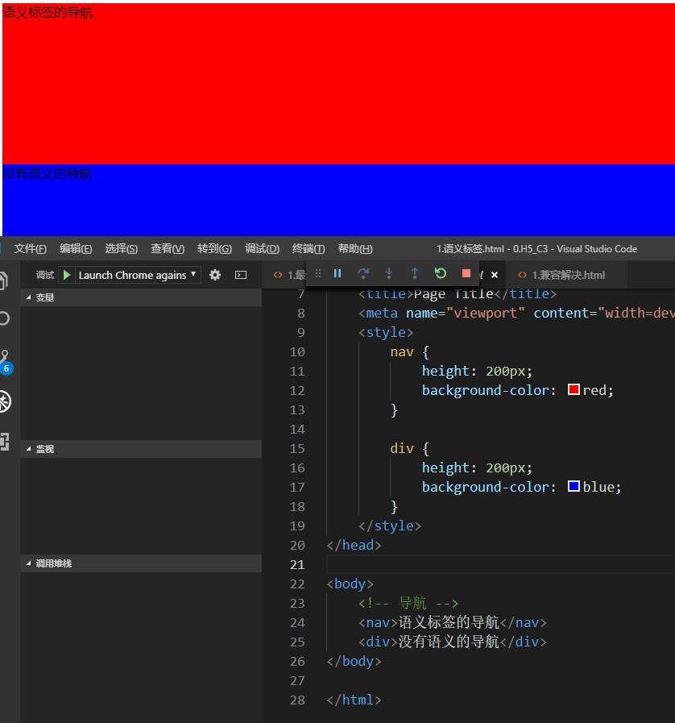
但是低版本不能识别（eg：IE8）
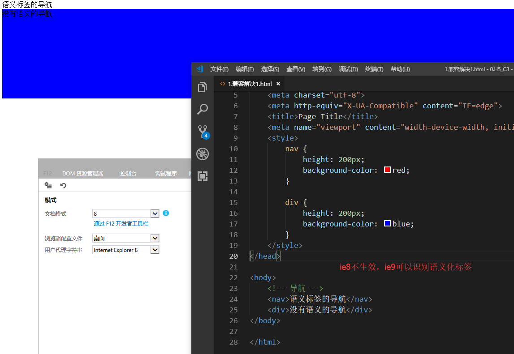
现在基本上都是引用一下兼容的库，我们先看看本质是啥：
<!DOCTYPE html>
<html>
<head>
<meta charset="utf-8">
<meta http-equiv="X-UA-Compatible" content="IE=edge">
<title>Page Title</title>
<meta name="viewport" content="width=device-width, initial-scale=1">
<style>
nav {
height: 200px;
background-color: red;
/* ie创建自定义标签默认是行级元素，height不生效，所以需要设置block */
display: block;
}
div {
height: 200px;
background-color: blue;
}
</style>
<script>
// 创建自定义标签
document.createElement("nav")
</script>
</head>
<body>
<!-- 本质就是因为不能识别，那就创建自定义标签，ie默认创建的为行级标签，那就设置为块级元素 -->
<nav>语义标签的导航</nav>
<div>没有语义的导航</div>
</body>
</html>兼容解决：
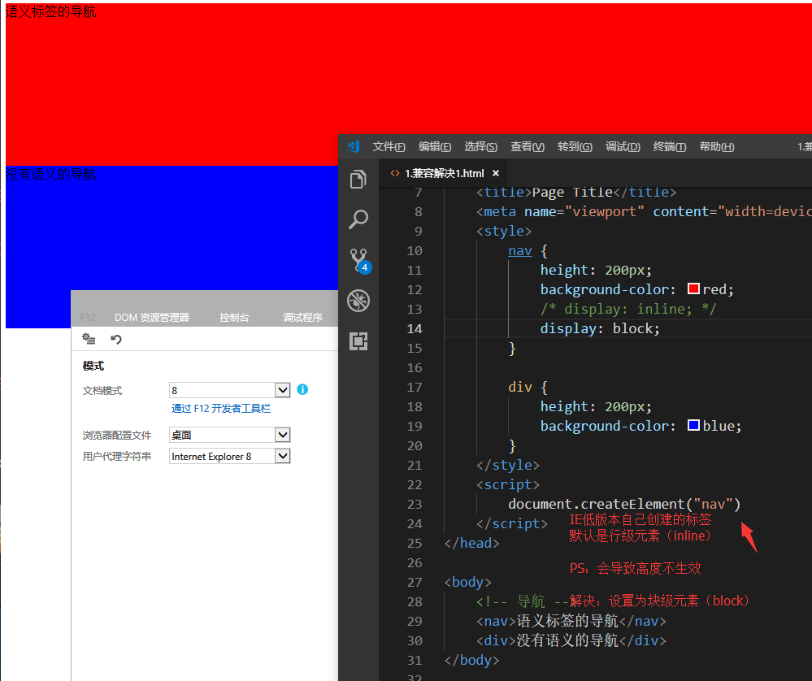
PS：本质就是因为不能识别这些语义化标签，那就需要创建自定义的标签。而ie默认创建的标签为行级标签，height就不生效了，所以就需要设置为块级元素
推荐一个兼容旧版本语义标签的库：https://github.com/aFarkas/html5shiv
<!DOCTYPE html>
<html>
<head>
<meta charset="utf-8">
<meta http-equiv="X-UA-Compatible" content="IE=edge">
<title>Page Title</title>
<meta name="viewport" content="width=device-width, initial-scale=1">
<style>
nav {
height: 200px;
background-color: red;
display: block;
}
div {
height: 200px;
background-color: blue;
}
</style>
<!-- if lt IE 9：低于`IE9`版本会加载 -->
<!--[if lt IE 9]>
<script type="text/javascript" src="../js/html5shiv.min.js"></script>
<![endif]-->
</head>
<body>
<nav>语义标签的导航</nav>
<div>没有语义的导航</div>
</body>
</html>PS：小知识点
[if IE]：IE浏览器[if !IE]：不是IE浏览器[if lt IE 9]：低于IE9[if lte IE 8]：<=IE8PS：我们一般使用Modernizr即可（默认包含了html5shiv）
还可以解决其他兼容性问题
<!--[if lte IE 9]>
<script type="text/javascript" src="https://cdn.staticfile.org/modernizr/2.8.3/modernizr.min.js"></script>
<![endif]-->来个语义化的页面演示：https://github.lesschina.com/html5/
PS：目前只适配了iPad、PC和IE9以上浏览器（移动端为了帮大家省流量准备单独搞个页面）
先看效果：（我开源了，感兴趣的可以去Fork）
PS：主打宽屏（逆天是1920的宽屏）
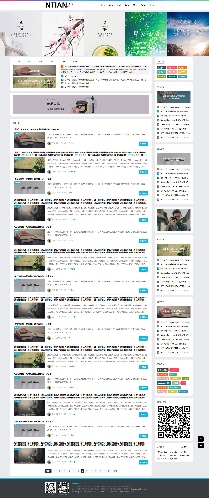
大致框架：https://github.com/lotapp/H5Blog
<header>
<div class="logo"></div>
<!-- nav>ul>li*5>a:link -->
<nav>
<ul>
<li><a href="#">首页</a></li>
<li><a href="#">资讯</a></li>
<li><a href="#">专业</a></li>
<li><a href="#">生活</a></li>
<li><a href="#">国学</a></li>
<li><a href="#">资源</a></li>
<li><a href="#">实验</a></li>
</ul>
</nav>
<div class="search"></div>
</header>
<div class="banner">
<!-- ul>li*5 -->
<ul>
<li></li>
<li></li>
<li></li>
<li></li>
<li></li>
</ul>
</div>
<!-- 主体内容 -->
<main>
<!-- 文章部分 -->
<article>
<!-- 最新文章 -->
<section class="new_article">
<header>
<nav>
<ul>
<li>首页</li>
<li>资讯</li>
<li>专业</li>
<li>生活</li>
<li>国学</li>
<li>资源</li>
</ul>
</nav>
</header>
<!-- 对应菜单的内容 -->
<div class="new_tabs">
<!-- div.new_item*5 -->
<div class="new_item">内容</div>
<div class="new_item">内容</div>
<div class="new_item">内容</div>
<div class="new_item">内容</div>
<div class="new_item">内容</div>
</div>
</section>
<!-- 文章列表 -->
<section class="blog_lsit">
<h2>推荐文章</h2>
<!-- ul>li*15 -->
<ul>
<li></li>
<li></li>
<li></li>
<li></li>
<li></li>
</ul>
</section>
<!-- 分页栏 -->
<footer>
<!-- ul>li*5（也可以直接使用a标签） -->
<ul>
<li></li>
<li></li>
<li></li>
<li></li>
<li></li>
</ul>
</footer>
</article>
<!-- 侧边栏，相关文章 -->
<!-- aside>sestion*5>h2+div -->
<aside>
<sestion>
<h2></h2>
<div></div>
</sestion>
<sestion>
<h2></h2>
<div></div>
</sestion>
</aside>
</main>
<!-- 尾部信息 -->
<footer>
<address>xxx</address>
</footer>官方文档：http://www.w3school.com.cn/html5/html_5_audio.asp and http://www.w3school.com.cn/html5/html_5_video.asp
主要属性：
<video src="http://www.w3school.com.cn/i/movie.mp4" controls autoplay loop muted>您的浏览器不支持video标签</video>
<audio src="http://www.w3school.com.cn/i/song.mp3" controls autoplay loop muted>您的浏览器不支持</audio>PS：大家有没有发现，现在视频网站都是自动播放，很多默认都是静音？
但是需要注意下不同浏览器的兼容格式：
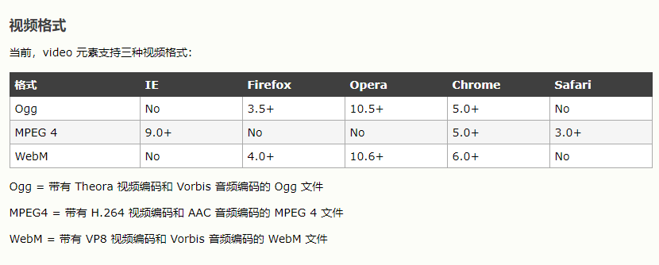
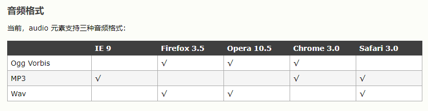
上面代码的兼容写法如下：
<video controls>
<source src="http://www.w3school.com.cn/i/movie.mp4">
<source src="http://www.w3school.com.cn/i/movie.ogg">
您的浏览器不支持video标签
</video>
<audio controls>
<source src="http://www.w3school.com.cn/i/song.mp3">
<source src="http://www.w3school.com.cn/i/song.ogg">
您的浏览器不支持audio标签
</audio>这个部分几年前讲过，记得还做了个播放器，就不去讲了，项目里也基本上用大厂开源的库：
PS：这几款播放器用的挺多：（推荐加粗项目）
Video.js（开源2.45W+）
cyberplayer（百度）
video.jstencentplayer（腾讯）
webtorrent(开源1.9w+)
Flv.js（Bilibili开源1.4w+）
DPlayer（开源5.3k+）
jwplayer（开源1.8k+）
1.65k+）
youkuplayer（优酷）
email：合法邮箱url：合法url地址number：合法数字date：显示日期month：显示月份week：显示第几周time：显示时间range：滑动条search：搜索框color：拾色器使用setCustomValidity()设置自定义验证
autocomplete="on|off"：是否自动完成novalidate="true|false"：不校验|校验数据required：必填选项autofocus：自动获取焦点placeholder：提示信息maxlength：最大字符数autocomplete：取消候选词
<input value="" maxlength="255" autocomplete="off">）multiple：多选效果form="表单id：把不在表单域里面的input添加到表单中<select multiple>
<option>11</option>
<option>22</option>
<option>33</option>
<option>44</option>
</select>
<input type="text" list="list_id" />
<datalist id="list_id">
<option>11</option>
<option>22</option>
</datalist>这个之前也说的很详细了，这边列了常用属性就完事了，感兴趣可以去老文章看看：https://www.cnblogs.com/dunitian/p/5125371.html
PS：有些是真方便，但表单验证一般不太用（不同浏览器表现UI不同，产品经理会打你的哦~）
这个高版本IE都支持，而且出了dom相关API后，现在基本上不太用JQ了
PS：有些项目需要兼容老版本浏览器的另说
获取页面元素：
document.querySelector("选择器")：返回符合选择器的第一个元素document.querySelectorAll("选择器")：返回所有符合选择器的元素document.querySelector("#id")、document.querySelector(".class")、document.querySelector("tag")举个栗子：我想让Python变成红色，用CSS可以这么写：
<!DOCTYPE html>
<html>
<head>
<meta charset="utf-8">
<title>选择器</title>
<style>
li span {
color: red;
}
</style>
</head>
<body>
<ul>
<li><span>Python</span></li>
<li>JavaScript</li>
</ul>
</body>
</html>效果：
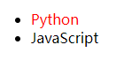
通过API可以这么干：（选择器写法和CSS一样）
<!DOCTYPE html>
<html>
<head>
<meta charset="utf-8">
<title>选择器</title>
</head>
<body>
<ul>
<li><span>Python</span></li>
<li>JavaScript</li>
</ul>
<script>
// 只能选中第一个元素（单个）
document.querySelector("li span").style.color = "red";
</script>
</body>
</html>全部变成红色可以这么干：
<!DOCTYPE html>
<html>
<head>
<meta charset="utf-8">
<title>选择器</title>
</head>
<body>
<ul>
<li><span>Python</span></li>
<li>JavaScript</li>
</ul>
<script>
// 选中所有符合的元素（列表）
dom_list = document.querySelectorAll("li");
// 用法很像C#
dom_list.forEach(item => {
item.style.color = "red";
});
</script>
</body>
</html>效果：
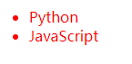
类名操作（页面元素对象的方法）
xxdom.classList.add("类名")：给当前dom元素添加类样式dom.classList.remove("类名")：移除当前dom元素的类样式dom.classList.contains("类名")：检测是否包含类样式dom.classList.toggle("类名")：切换类样式
举个栗子：
<!DOCTYPE html>
<html>
<head>
<meta charset="utf-8">
<title>类名操作</title>
<style type="text/css">
.dis {
background-color: red;
width: 300px;
height: 50px;
}
</style>
</head>
<body>
<div class="demo"></div>
<div>
<input type="button" value="添加类名" class="add mmd">
<input type="button" value="移除类名" class="remove">
<input type="button" value="切换类名" class="toggle">
<input type="button" value="是否包含类名" class="contains">
</div>
<script>
// 演示对象
let demo_obj = document.querySelector(".demo");
// 给几个按钮对象注册点击事件
// 添加
document.querySelector(".add").onclick = () => {
demo_obj.classList.add("dis");
};
// 移除
let remove_btn = document.querySelector(".remove").onclick = () => {
demo_obj.classList.remove("dis");
};
// 切换
let toggle_btn = document.querySelector(".toggle").onclick = () => {
demo_obj.classList.toggle("dis"); // 没则添加，有则移除
};
// 是否包含
let contains_btn = document.querySelector(".contains").onclick = () => {
let b = demo_obj.classList.contains("dis");
console.log(b);
};
</script>
</body>
</html>效果：
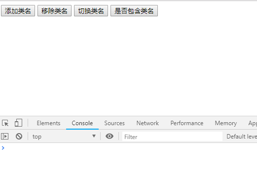
PS：ES6兼容可以使用babel：cnpm i babel-core@old > babel-core > browser.min.js
回顾：
cnpm配置：https://www.cnblogs.com/dotnetcrazy/p/10118756.html#1.1.NPM国内镜像
自定义属性：在标签中的data-自定义属性名
dom.dataset.自定义属性名 or dom.dataset["自定义属性名"]dom.dataset.自定义属性名 = xxx or dom.dataset["自定义属性名"] = xxxdelete dom.dataset.自定义属性名 or delete dom.dataset["自定义属性名"]dom.getAttribute("属性名")dom.removeAttribute("属性名")dom.setAttribute("属性名", "值")dom.hasAttribute("属性名")举个栗子：
<div class="test" data-name="mmd" data-test-one="test">自定义属性</div>
<script>
// 获取标签的自定义属性值
let list = document.querySelector(".test").dataset;
// 获取：dom.dataset.自定义属性名（属性名不包含`data-`)
console.log(list.name);
// PS：test-one名字会改成驼峰命名的变量：testOne
console.log(list.testOne)
// 设置：dom.dataset.自定义属性名 = xxx or dataset[自定义属性名] = xxx
list.name = "小明"; // 标签中对应值会变成小明
list.age = 23; // 添加一个属性
// PS：设置为data-test-two
list.testTwo = "test2";
</script>输出效果：
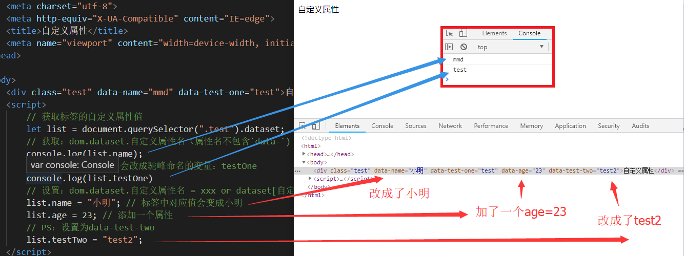
现在可以用HTML5把上次的Shopee案例改写了：小计：Shopee批量删除修复~附脚本
// 核心代码：
setInterval(function () {
var btn = document.querySelector(".delete-button");
// 只有选择之后才会出现按钮
if (btn) {
// 如果包含disabled类就删除
if (btn.classList.contains("disabled")) {
btn.classList.remove("disabled");
}
// 如果包含disabled属性
if (btn.hasAttribute("disabled")) {
btn.removeAttribute("disabled");
}
}
}, 1000);PS：妈妈再也不要担心依赖JQuery了
这个摸索好久，网上都是手写js去兼容，然后拿过来用发现。。。。你懂得
本来都准备不用classList这么方便的api了，后来发现了神器：classList
贴一下我的前端兼容方案：（modernizr上面说了）
<!--[if lte IE 9]>
<script type="text/javascript" src="https://cdn.staticfile.org/modernizr/2.8.3/modernizr.min.js"></script>
<script type="text/javascript" src="https://cdn.staticfile.org/classlist/1.2.20180112/classList.min.js"></script>
<![endif]-->PS：如果想要兼容ES6基础语法、async/await，可以使用这两个库：babel-core、babel-polyfill
// balel-core这个版本是最新的（再新的就不兼容IE了）
<script type="text/javascript" src="https://cdn.staticfile.org/babel-core/5.8.38/browser.min.js"></script>1.FileReader常用读取文件的方法：
reader.readAsText：将文件读取为文本reader.readAsDataURL：将文件读取为DataURL（Base64）reader.readAsBinaryString：将文件读取为二进制编码reader.result中2.FileReader中含有的事件：
onabort：中断时触发onerror：出错时触发onload：文件读取成功完成时触发onloadend：读取完成触发，无论成功或失败onloadstart：读取开始时触发onprogress：读取中<!DOCTYPE html>
<html>
<head>
<meta charset="utf-8">
<title>文本读取</title>
</head>
<body>
<input class="file" type="file" name="">
<script>
let file_btn = document.querySelector("input");
// 注意一下this的问题：<http://www.cnblogs.com/dotnetcrazy/p/10061671.html#3.4.特殊的this（重要）>
file_btn.onchange = function () {
// 获取文件
let file = this.files[0];
// type只能识别常用格式，`.md`就不能识别
console.log(file);
// 开始读取（创建读取器）
let reader = new FileReader(); // Python不写new
// 用读取文本的方式来读取
reader.readAsText(file); // 没有返回值
// 取代完成后执行
reader.onload = () => {
console.log(reader.result);
};
};
</script>
</body>
</html>图示：
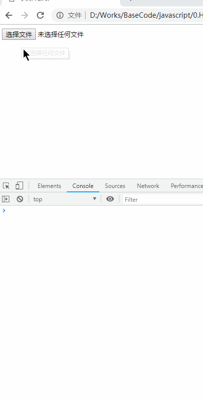
<!DOCTYPE html>
<html>
<head>
<meta charset="utf-8">
<meta http-equiv="X-UA-Compatible" content="IE=edge">
<title>图片读取-Base64</title>
<meta name="viewport" content="width=device-width, initial-scale=1">
</head>
<body>
<div><p><input type="file" /></p></div>
<script>
let img_exts = [".png", ".gif", ".jpg", ".jpeg", ".bmp", ".svg", ".ico"];
// 获取input对象
let input_obj = document.querySelector("input");
// 文件上传
input_obj.onchange = function () {
// 获取文件信息
let file = input_obj.files[0];
// 获取文件后缀
let ext = file.name.substring(file.name.lastIndexOf('.'));
// 不是图片
if (img_exts.indexOf(ext) == -1) {
alert("请上传图片，这个文件格式不支持哦~");
return
}
// 实例化文件读取器
let reader = new FileReader();
// base64的方式读取文件
reader.readAsDataURL(file); // 没有返回值
// 读取完成后执行
reader.onload = () => {
// 创建一个img对象
let img_obj = document.createElement("img");
// 把读取结果设置为img的src
img_obj.src = reader.result;
// 创建的img对象插入到div中
document.querySelector("div").appendChild(img_obj);
}
}
</script>
</body>
</html>图示：
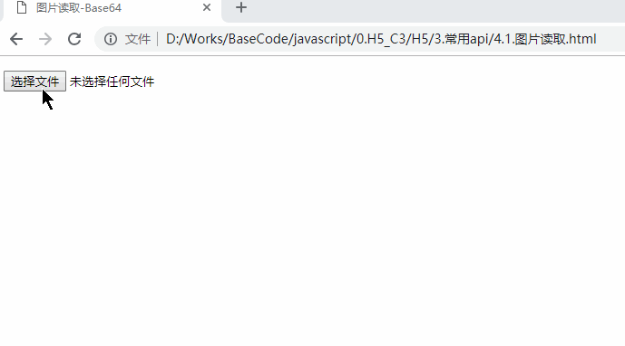
PS：核心代码：
// 获取input对象
let input_obj = document.querySelector("input");
// 文件上传
input_obj.onchange = function () {
// 获取文件信息
let file = input_obj.files[0];
// 实例化文件读取器
let reader = new FileReader();
// base64的方式读取文件
reader.readAsDataURL(file); // 没有返回值
// 读取完成后执行
reader.onload = () => {
console.log(reader.result);
}
}PS：一般小文本文件或者图片会用，多个文件或者大文件读取不推荐使用
注意一下this的问题：http://www.cnblogs.com/dotnetcrazy/p/10061671.html#3.4.特殊的this（重要）
普通函数的this ==> 谁调用就是谁（经常变：谁调用是谁）
function show() {
alert(this); // 1,2,3,4
console.log(this); // [1, 2, 3, 4, show: ƒ]
}
let arr = [1, 2, 3, 4];
arr.show = show;
arr.show();箭头函数的this ==> 在谁的环境下this就是谁（不变：当前作用域）
let arr = [1, 2, 3, 4];
arr.show = () => {
alert(this); // [object Window]
console.log(this); // Window
}
arr.show();PS：解决回顾：https://www.cnblogs.com/dotnetcrazy/p/10061671.html#业余拓展
window.navigator.onLine
window.ononline：联网触发window.onoffline：离线时候触发PS：主要是移动端用的比较多
演示案例：
// 获取网络状态
var state = window.navigator.onLine;
if (state) {
console.log("当前网络可用");
} else {
console.warn("断网提醒：当前网络不可用");
}
// 断网执行的事件
window.onoffline = () => {
document.write("网络已断开");
console.log(window.navigator.onLine)
}
// 联网执行的事件
window.ononline = () => {
document.write("网络已连接");
console.log(window.navigator.onLine)
};经过实验发现，事件只会执行一次，而且属于有'我没你'的互斥现象，演示如下：
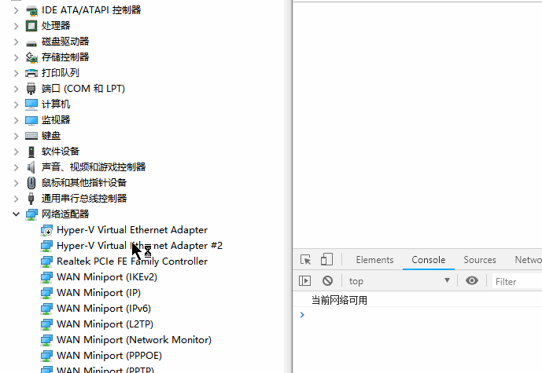
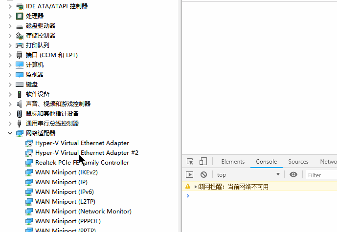
PS：如果已经是联网状态，只会执行断开的事件，重新连接也不会执行联网事件。反之一样~
geolocation：定位
原理：
知识点：
res.coords.longitude：经度res.coords.latitude：纬度res.coords.speed：移动速度
res.coords.accuracy：精确度
案例：
console.log(window.navigator.userAgent); // PS：Agent也是可以获取的
let position = window.navigator.geolocation.getCurrentPosition(res => {
// 获取成功执行
console.log("获取成功", res.coords);
console.log(res.coords.longitude, res.coords.latitude,"Location in Canada");
}, ex => {
console.log("获取失败", ex);
});动态演示：（PS：没FQ的可以使用IE演示）
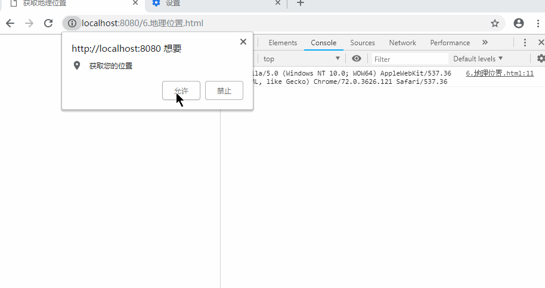
扩展：小程序版地图案例：https://www.cnblogs.com/dotnetcrazy/p/10597311.html#_map17
PS：很多公司官网介绍里面的地图其实就是通过地图生成器生成的：http://api.map.baidu.com/lbsapi/createmap/index.html
PS：1.2版本不用密钥但是和地图生成器有点渲染的bug，你可以使用对应的API（
<script type="text/javascript" src="http://api.map.baidu.com/getscript?v=1.2"></script>）
分享一下我的密钥：b3g90mWBIE2VaSCcCuPCXjhj
<script type="text/javascript" src="http://api.map.baidu.com/getscript?v=2.0&ak=b3g90mWBIE2VaSCcCuPCXjhj"></script>
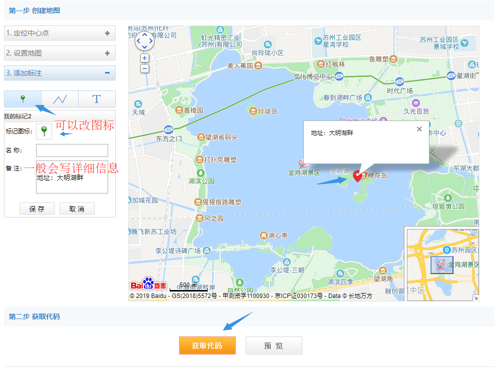
我稍微修改了点，发下demo：
<!DOCTYPE html>
<html>
<head>
<meta charset="utf-8">
<title>百度地图API自定义地图</title>
<script type="text/javascript" src="http://api.map.baidu.com/getscript?v=2.0&ak=b3g90mWBIE2VaSCcCuPCXjhj"></script>
</head>
<body>
<!-- PS：你的宽和高是多少，它就填充多少 -->
<div id="baidumap" style="width:1000px;height:500px;"></div>
<script src="../js/baidumap.js"></script>
<script>
window.onload = () => {
window.navigator.geolocation.getCurrentPosition(res => {
// 初始化百度地图
initMap("baidumap", res.coords.longitude, res.coords.latitude);
}, ex => {
console.warn("获取失败", ex);
});
}
</script>
</body>
</html>PS：你的宽和高是多少，它就填充多少
baidumap.js：
var map;
//创建地图
function createMap(id_str, lng, lat) {
map = new BMap.Map(id_str);
map.centerAndZoom(new BMap.Point(lng, lat), 15);
}
//设置地图事件
function setMapEvent() {
map.enableScrollWheelZoom();
map.enableKeyboard();
map.enableDragging();
map.enableDoubleClickZoom()
}
// 图标单击事件
function addClickHandler(target, window) {
target.addEventListener("click", function () {
target.openInfoWindow(window);
});
}
//向地图添加覆盖物
function addMapOverlay(lng, lat, content) {
var markers = [{
content: content, // 一般写详细地址
title: "",
imageOffset: {
width: -46,
height: -21
},
position: {
lng: lng,
lat: lat
}
}, ];
for (var index = 0; index < markers.length; index++) {
var point = new BMap.Point(markers[index].position.lng, markers[index].position.lat);
var marker = new BMap.Marker(point, {
icon: new BMap.Icon("http://api.map.baidu.com/lbsapi/createmap/images/icon.png", new BMap.Size(20, 25), {
imageOffset: new BMap.Size(markers[index].imageOffset.width, markers[index].imageOffset.height)
})
});
var label = new BMap.Label(markers[index].title, {
offset: new BMap.Size(25, 5)
});
var opts = {
width: 200,
title: markers[index].title,
enableMessage: false
};
var infoWindow = new BMap.InfoWindow(markers[index].content, opts);
marker.setLabel(label);
addClickHandler(marker, infoWindow);
map.addOverlay(marker);
};
var labels = [];
for (var index = 0; index < labels.length; index++) {
var opt = {
position: new BMap.Point(labels[index].position.lng, labels[index].position.lat)
};
var label = new BMap.Label(labels[index].content, opt);
map.addOverlay(label);
};
var plOpts = [];
var plPath = [];
for (var index = 0; index < plOpts.length; index++) {
var polyline = new BMap.Polyline(plPath[index], plOpts[index]);
map.addOverlay(polyline);
}
}
//向地图添加控件
function addMapControl() {
var scaleControl = new BMap.ScaleControl({
anchor: BMAP_ANCHOR_BOTTOM_LEFT
});
scaleControl.setUnit(BMAP_UNIT_IMPERIAL);
map.addControl(scaleControl);
var navControl = new BMap.NavigationControl({
anchor: BMAP_ANCHOR_TOP_LEFT,
type: 0
});
map.addControl(navControl);
var overviewControl = new BMap.OverviewMapControl({
anchor: BMAP_ANCHOR_BOTTOM_RIGHT,
isOpen: true
});
map.addControl(overviewControl);
}
//创建和初始化地图函数：id字符串，经度，纬度，详细信息
function initMap(id_str, lng, lat, content) {
console.info(id_str, lng, lat, content);
if (content == undefined) {
content = "I am here"; //`lng:${lng},lat:${lat}`; // ES6语法（默认参数也是ES6语法）
console.info("没有详细描述");
}
createMap(id_str, lng, lat); //创建地图
setMapEvent(); //设置地图事件
addMapControl(); //向地图添加控件
addMapOverlay(lng, lat, content); //向地图添加覆盖物
}效果：（也进一步验证了，PC端是根据ip来定位的）
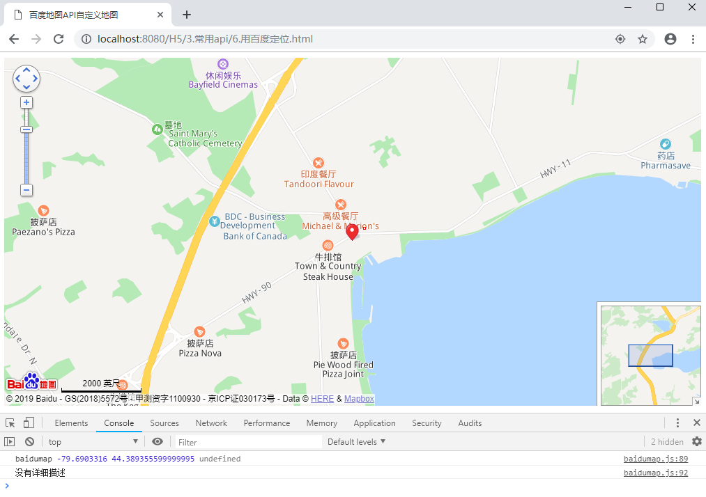
cookie：浏览器和服务器共享(4k)localStorage：浏览器独享（5M)
sessionStorage：当前会话使用的存储
知识点：
localStorage.setItem("key", "value")localStorage.getItem("key")localStorage.removeItem("key")来个案例：
console.log("-------------设置值---------------------")
// 设置值：setItem(key,value)
localStorage.setItem("id", 11);
localStorage.setItem("name", "小明");
// 其他实现
localStorage.age = 23; // 这种方式也可以
localStorage["gender"] = 1; // 这种方式设置也可以
console.log("-------------获取值---------------------")
//获取值：getItem(key)
localStorage.getItem("id");
// 其他实现
console.log(localStorage.age); // 这种方式也可以
console.log(localStorage.mmd); // 如果key不存在=>`undefined`
console.log(localStorage["gender"]); // 这种方式也可以
console.log(localStorage["mmd"]); // 如果key不存在=>`undefined`
console.log("-------------删除值---------------------")
// 删除值
localStorage.removeItem("id");
// 其他实现
delete localStorage.age;
delete localStorage["gender"];
console.log("-------------遍历值---------------------")
// 官方推荐的遍历方式
for (let i = 0; i < localStorage.length; i++) {
let key = localStorage.key(i);
let value = localStorage.getItem(key);
console.log(key, value);
}输出：
-------------设置值---------------------
-------------获取值---------------------
23
undefined
1
undefined
-------------删除值---------------------
-------------遍历值---------------------
name 小明PS：for in 的方式会把方法也遍历出来，不是我们需要的key-value
实际场景：保存文章草稿
先看一下正常情况：（一般就是添加一个关闭页面的提示）
但遇到浏览器卡死或者断点就没用了，对于写文章长达好几个小时的作者来说是一个悲剧。。。
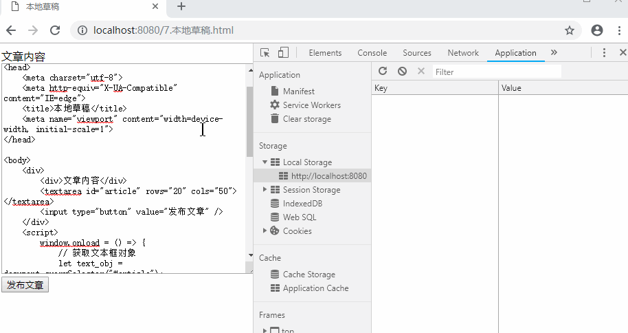
通过本地存储实现无缝缓存草稿
<!DOCTYPE html>
<html>
<head>
<meta charset="utf-8">
<meta http-equiv="X-UA-Compatible" content="IE=edge">
<title>本地草稿</title>
<meta name="viewport" content="width=device-width, initial-scale=1">
</head>
<body>
<div>
<div>文章内容</div>
<textarea id="article" rows="20" cols="50"></textarea>
<input type="button" value="发布文章" />
</div>
<script>
window.onload = () => {
// 获取文本框对象
let text_obj = document.querySelector("#article");
// 根据文章编号，把草稿内容读取出来（如果没有就为空字符串）
text_obj.value = localStorage["5547"] || '';
// 文本内容改变了就执行（输入事件）
text_obj.oninput = () => {
// 假设当前文章id是5547
localStorage["5547"] = text_obj.value;
}
// 获取按钮对象
let btn_obj = document.querySelector("input");
btn_obj.onclick = () => {
// Ajax请求（我这边省略）
alert("文章发布成功！");
// 清除对应文章的草稿
delete localStorage["5547"];
}
}
</script>
</body>
</html>效果演示：
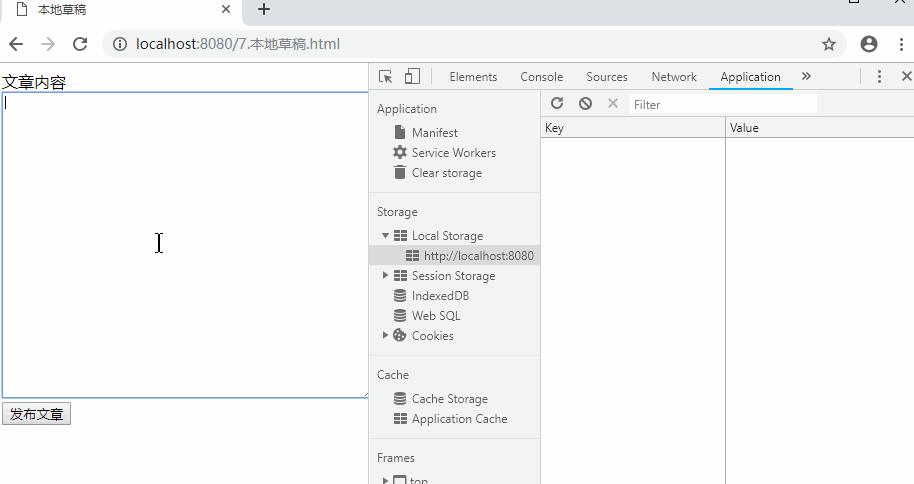
PS：WebSQL、IndexedDB因为安全性，现在基本上不用了（官方也不在维护了）
题外话：
localStorage基本上够用了（数据库都暴露在前端了，还有啥安全性？）
这个几年前已经说过了，感兴趣的可以自己回顾一下：http://www.cnblogs.com/dunitian/p/5149156.html
说句实话，搞后端的不大可能自己弄画布相关的API，一般用用类似于Echarts就可以了（在Canvas基础上的封装实现）
给canvas设置宽高的时候要通过内嵌的属性width和height来设置，如果通过CSS设置则会失真
PS：通过CSS设置，相当于把默认画布大小（
302*152左右）拉伸一下
PS：SVG是矢量图，Canvas是位图
应该，貌似，没有忘记说的吧？几年前贴的思维导图（学习笔记）虽然丑了点，但知识还是挺全的，不清楚的点可以翻哦~
Web大前端时代之：HTML5+CSS3入门系列：http://www.cnblogs.com/dunitian/p/5121725.html
最后贴一下Demo：
下节预估：一文入门CSS3